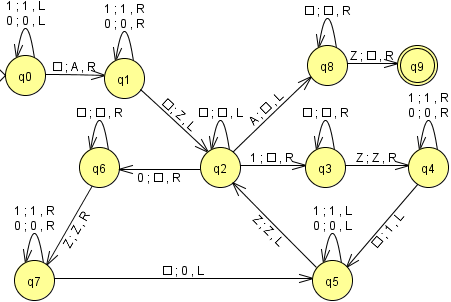
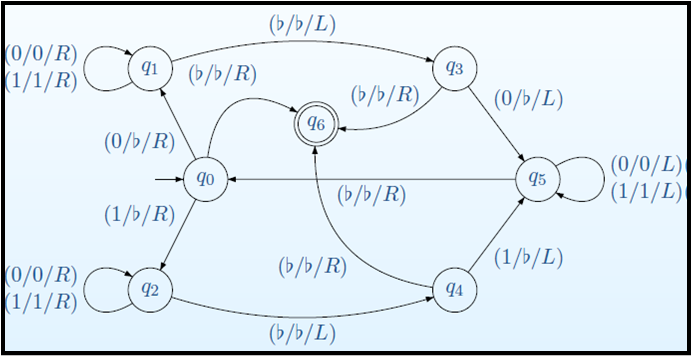

Todo lenguaje aceptado por una máquina de Turing no determinista puede ser aceptado por una máquina de Turing determinista.
Ha habido diversos intentos de encontrar otros modelos de maquinas u otros formalismos que sean mas poderosos que las MT, en el mismo sentido que las MT son mas poderosas que los AF y los AP. (Decimos que una tipo de maquina MA es mas poderoso que un tipo MB cuando el conjunto de lenguajes aceptados por alguna maquina en MB es un subconjunto propio de los aceptados por MA).
Por ejemplo, independientemente de Turing, Emil Post propuso aun otro modelo de máquina abstracta, basada en la idea de un diagrama de flujo. También se han tratado de hacer “extensiones” a la MT, para hacerla mas poderosa. Por ejemplo, se propusieron MT no deterministas. Sin embargo, todos los intentos han sido infructuosos al encontrarse que dichas extensiones son equivalentes en poder de calculo a la MT original
En el caso de que exista al menos un par (estado, símbolo) con más de una posible combinación de actuaciones se dirá que se trata de una máquina de Turing no determinista.
Obtiene la inversa de una palabra en L = {0n1n | n >= 1
Máquina que acepta el lenguaje de palíndromos sobre {0, 1}
